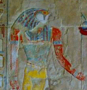
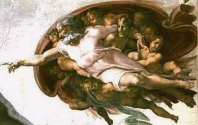

Un mundo sin dioses
Millones de personas son todavía incapaces de vivir sin dioses. Sus divinidades los mantienen optimistas frente a las calamidades de la vida y les ofrecen variadas explicaciones sobre la muerte y ciertos enigmas aún no explicados. Este tipo de razonamiento no es nuevo, los seres humanos lo hemos utilizado desde que surgió la primera duda. La invención de dioses y diosas fue un recurso necesario para combatir la cruda ignorancia. Aún parece serlo.

Pero los dioses mueren. La historia humana está llena de divinidades muertas, fallecidas en diferentes épocas, lugares y para diferentes personas. Dioses que una vez ordenaron los más horrorosos sacrificios, hoy son sólo estatuas en museos y preguntas en exámenes de arqueología e historia de culturas antiguas. Dioses que una vez disfrutaron de los más deliciosos manjares y habitaron en los templos más ostentosos, hoy ya no existen más que en las páginas de los libros que cuentan sus leyendas. Estos dioses poderosos, que regían, rugían y ordenaban el mundo de los débiles e ignorantes humanos que los inventaron, hoy tienen menos poder que un santo y la mayoría de la población moderna ni siquiera los conoce.
En esta página proponemos un mundo sin dioses. Pensamos que, al igual que sus antepasados divinos, las divinidades presentes también pereceran algún día.

Para nosotros no existen conflictos entre la ciencia y la religión porque la religión no ha explicado nada que pueda ser verificado. Ha sido tan sólo a través de la ciencia y la utilización del método científico que el ser humano ha logrado descifrar el mundo que habita y descubrir las leyes que lo rigen. Ningún dios ha dicho nada que explique la enigmática presencia de los hoyos negros o que avance el desarrollo de los carros solares, por mencionar dos ejemplos. En ninguno de los libros considerados sagrados, ahora o en otros tiempos, se han encontrado definiciones sobre el funcionamiento neuronal o la forma más eficaz de eliminar el cáncer. No, los dioses no han dicho nada al respecto. Los dioses, por el contrario, se han dedicado a pelear, a ordenar, a actuar como tiranos unas veces o como padres complacientes en otras. Los dioses han exigido el sacrificio de niños y familias enteras cuando tenían sed de sangre, han dado el poder a sus religiones para que masacren y torturen a los herejes que osaban creer en otros dioses, dioses que luego morían al ser cambiados por otros, aún más poderosos.
Los dioses de hoy son menos activos. Todas las interpretaciones que sus religiones han tenido que introducir para explicarse mejor frente a los descubrimientos científicos, han diluído un poco sus poderes. Estos dioses no son capaces ni del más nimio de los milagros. Ni provocan, ni evitan, ni ayudan, ni destruyen. Son dioses pasivos, que por lo visto no tienen ningún lazo directo con la humanidad ni están nada interesados en nuestra suerte ni en nuestro futuro.
Por lo tanto, creemos preferible un futuro sin dioses. Así evitamos toda esa interferencia innecesaria y nos concentramos en tratar de entender el Cosmos mediante el método científico. Nada de autoridades, ni dogmas, ni verdades absolutas, sólo un libro abierto en donde las teorías son mejoradas o suplantadas por otras mejores cada vez que sea necesario para el rápido y constante avance del conocimiento en general.
Volver a Simplemente ateísmo
Comentarios
Comments powered by Disqus